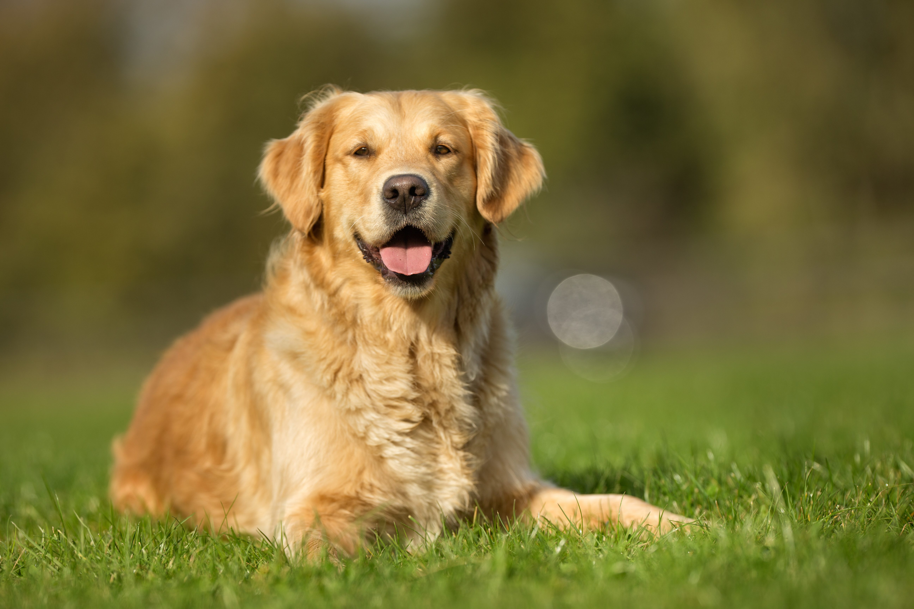

Golden retrievery to psy o wyjątkowo przyjaznym i łagodnym usposobieniu, które sprawia, że są idealnymi towarzyszami rodzin, w tym dzieci. Ich charakterystyczna, złocista sierść i uśmiechnięty wyraz pyska dodają im jeszcze większej sympatyczności. Psy te są inteligentne, łatwo przyswajają nowe komendy i chętnie współpracują z właścicielem, co czyni je popularnymi w szkoleniach posłuszeństwa i pracy jako psy przewodniki dla osób niewidomych.
Golden retrievery są również bardzo aktywne i potrzebują regularnej dawki ruchu, aby zachować zdrowie fizyczne i psychiczne. Uwielbiają aportowanie, pływanie i długie spacery, a ich energiczne usposobienie sprawia, że świetnie sprawdzają się w różnych sportach kynologicznych. Odpowiednia ilość aktywności pomaga także ograniczyć problemy behawioralne, które mogą pojawić się u psów zbyt długo pozostających bez zajęcia.
Opieka nad golden retrieverem wymaga również regularnej pielęgnacji sierści, która łatwo się plącze i gubi włosy przez cały rok. Konieczne jest częste szczotkowanie, a także dbanie o higienę uszu i pazurów. Mimo że golden retrievery bywają podatne na pewne schorzenia genetyczne, takie jak dysplazja stawów biodrowych czy problemy sercowe, przy odpowiedniej opiece i regularnych wizytach u weterynarza mogą żyć zdrowo i radośnie nawet 10-12 lat.
